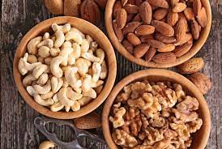
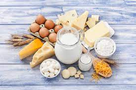
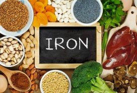
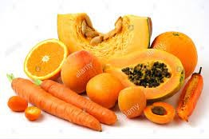
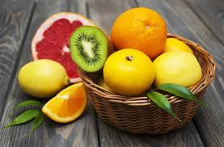
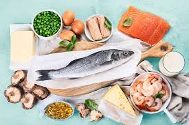

| NUTRIENTS | DAILY VALUE | FUNCTIONS | SOURCES |
|---|
| PROTEIN |
|---|
|  | 16 g | Important for Growth and development and helps in repairing cells. | good sources include poultry,meat,fish,egg,nuts,etc.. |
| FIBER |
|---|
 | NA | Important for preventing constipationalso help decrease risk of type 2 diabetes , heart diseases later in life. | good sources include fresh fruits with skin on , dry fruits , vegetables , etc.. |
| CALCIUM |
|---|
|  | 800 mg | Important for strong bones and teethand helps in muscle function ,blood clotting , and nerve transmission.. | good sources include dairy products , green vegetables , orange juice and tofu.. |
| IRON |
|---|
|  | 10 mg | Important for formation of hemoglobin to carry oxygen through the body. | good sources include poultry , meat , fish , egg , leafy vegetables , and grains .. |
| VITAMIN A |
|---|
|  | 2500 IU | important for eyesight, growth, functioning of immune system and healthy skin | good sources include dark green vegetables, orange fruits and vegetables , egg , milk , etc .. |
| VITAMIN C |
|---|
|  | 40 mg | Important for devreasing risk of cold, infections. keeping gums , skin healthy | good sources include citrus fruits , broccoli , berries , pepers , etc .. |
| VITAMIN D |
|---|
,tr>> | 400 IU | Important for strong bones and teeth because it helps absorb calcium which is important for immune function | good sources include milk firtified with vitamin D , fatty fish , egg yolks ..
|